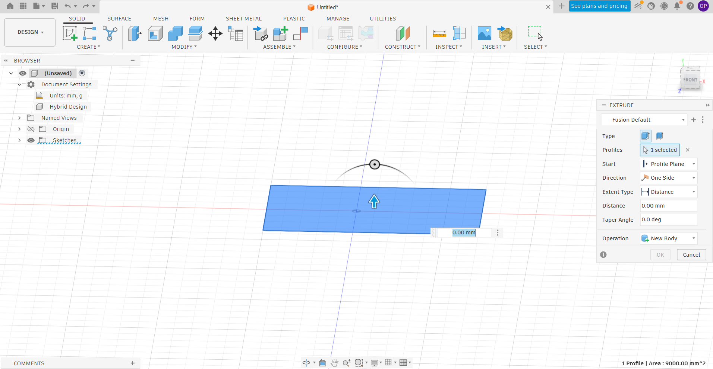

📐 Week 2 – Day 6: Autodesk Fusion – Phone Stand & Cylindrical Engraving
📌 Introduction
Autodesk Fusion is a powerful CAD/CAM/CAE tool. Today we practised two practical projects: designing a custom phone stand and engraving text on a cylindrical object. These exercises teach essential skills like sketching, extruding, shelling, and using the revolve tool for text placement.
📱 Project 1: Creating a Phone Stand
Step 1 – Create a New Part Design
Open Autodesk Fusion, click Create and select Part Design.
Step 2 – Select a Plane
Choose a plane (e.g., XY plane) to start your sketch.
Step 3 – Create a Sketch
Click on Sketch to enter sketch mode.
Step 4 – Draw a Rectangle
Use the rectangle tool to draw a shape matching your smartphone dimensions (e.g., width 80 mm, height 10 mm for the base). You can add fillets later for comfort.
Step 5 – Extrude the Base
Select the rectangle and press E (extrude shortcut). Set the extrusion distance to your desired thickness (e.g., 5–10 mm). This forms the main body of the stand.
Step 6 – Add Text (Logo or Name)
From the Create menu, select Text. Type your desired text (e.g., “Tinkerers’ Lab” or your name). Place it on the front face of the stand.
Step 7 – Revolve the Text
Go to the Surface tab and select Revolve. Choose the bottom axis of the stand as the revolve axis. Set the angle to 45° to give the text a slight tilt, making it more readable from a normal viewing angle.
Why revolve? Revolving the text around a horizontal axis can create a subtle embossed effect that looks professional and is easier to see when the phone is placed.
💡 Tip: After revolving, you may also add a small lip or groove to hold the phone securely. Use the Shell command to hollow out unnecessary weight.
Final Touches for the Phone Stand
Add fillets to sharp edges for safety and aesthetics. Save the file as PhoneStand_v1.f3d.
🥫 Project 2: Engraving Text on a Cylindrical Object
Step 1 – Create a New Part Design
Start a new design and choose Part Design.
Step 2 – Select a Plane
Choose the XY plane or any suitable plane.
Step 3 – Create a Sketch
Enter sketch mode and draw a circle of diameter 100 mm.

Step 4 – Extrude the Cylinder
Select the circle and press E. Set the extrusion height to 40 mm to form a solid cylinder.

Step 5 – Hollow the Cylinder (Shell)
Select the top face of the cylinder, then use the Shell command. Set the wall thickness to 1 mm. This creates a hollow container (like a cup).

Step 6 – Create a Sketch on the Front Plane
Select the front plane (or any plane parallel to the cylinder axis) and create a new sketch. Use the Text tool to write your desired text (e.g., “TL Internship 2026”).


Step 7 – Extrude the Text (Engrave)
Select the text profile and press E. In the extrusion dialog:
- Set the distance to -1 mm (negative value cuts into the cylinder).
- For the start option, choose Object and select the outer face of the cylinder. This ensures the extrusion starts exactly at the cylinder surface.
Click OK. The text is now engraved (cut into) the cylinder surface.


Additional Tips for Cylindrical Engraving
- To make the text stand out, you can later apply a different colour or material to the engraved faces.
- If you want raised (embossed) text instead of engraved, use a positive extrusion distance and choose “New Body” or “Join”.
- For curved text that wraps around the cylinder, use the Text on Path tool (available in the Sketch environment).
🎯 Conclusion
Using Autodesk Fusion for designing a phone stand and engraving text on a cylindrical object helps learn important 3D modelling skills such as sketching, extruding, modifying shapes, and adding custom text. Fusion 360 provides an easy and accurate way to create both simple and complex models with professional results.
The phone stand project improves understanding of product design and measurements, while the cylindrical text engraving process demonstrates how to customize objects using sketch and extrude tools. Overall, Fusion 360 is a powerful and user‑friendly software for creating creative, precise, and practical 3D designs.
📌 Key Takeaways
- Sketch + Extrude – The foundation of most 3D models.
- Shell – Creates hollow objects, saving material and weight.
- Revolve – Useful for rotating text or profiles around an axis.
- Negative Extrusion (Emboss/Engrave) – Cuts text or shapes into a surface.
- Object start option – Allows extrusions to begin exactly at a curved surface.
- These skills are directly applicable to designing custom enclosures, personalised gifts, and mechanical parts.
📸 Image Reference
This documentation uses screenshots (img1.png to img7.png). Place your corresponding images in the same folder as this HTML file.